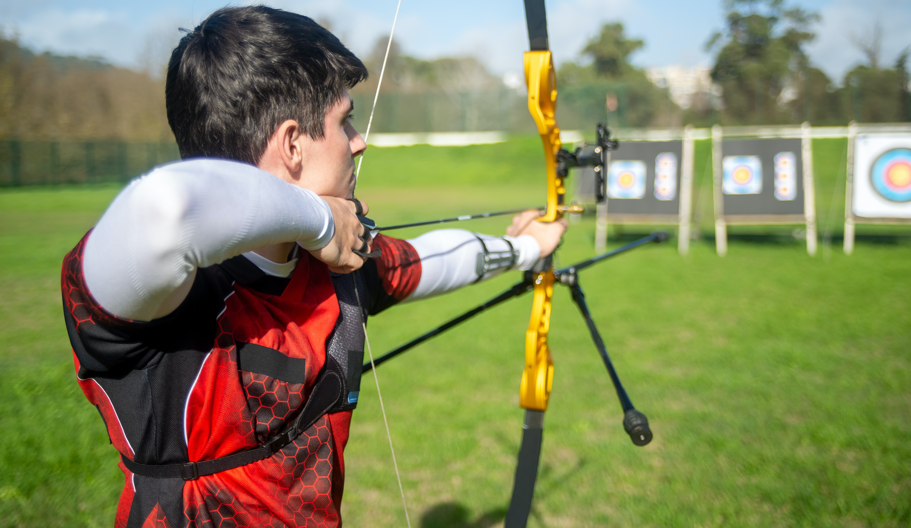
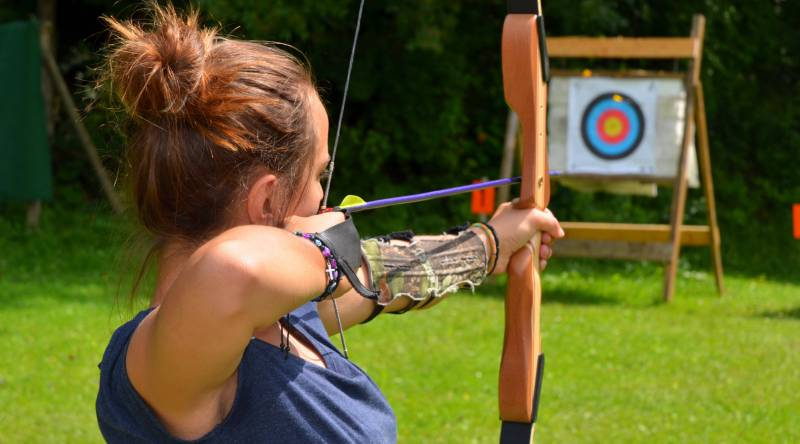
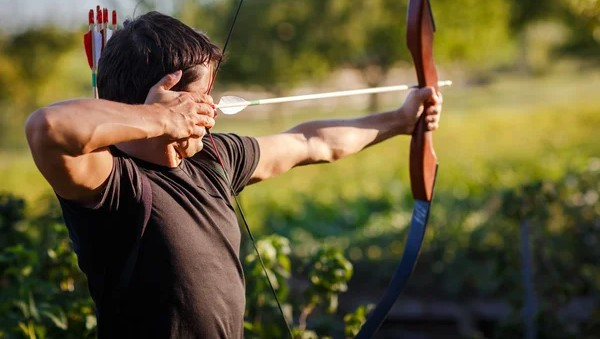

Famous Archers (Under Construction)
- 1. Deepika Kumari (born 13 June 1994) is an Indian professional archer. She is currently ranked #2 in the
world
- 2. Sara José López Bueno, is a Colombian athlete who competes in compound archery. She first competed for the
Colombian national team in 2011 Pre-Olympic event in Medellin, Colombia. She won medals at several editions of
the World Games.
- 3. Brady Ellison is an American archer who competes in recurve archery. He holds the record for the longest
continuous period as the world number-one-ranked men's recurve archer, from August 2011 to April 2013


- 4. Darrell Owen Pace is a former archer from the United States, who won two individual Olympic and World
Championships titles each during his career. In 2011, as part of the World Archery Federation's 80th anniversary
celebration, he was declared as by the WAF as "Archer of the Century"
- 5. Kim Woo-jin is a South Korean archer specializing in recurve archery. He first held the world number one
ranking ranking in 2011. At the 2016 Summer Olympics, he set a world record in men's individual recurve archery
and received a gold medal as a member of the South Korean men's archery team.
- 6. Ki Bo-bae is a South Korean recurve archer and three-time Olympic gold medalist. She was the winner of the
women's team and women's individual events at the 2012 Summer Olympics and of the women's team event again at
the 2016 Summer Olympics, where she also took bronze in the individual competition
- Marcus Vinicius Carvalho Lopes D'Almeida, known as Marcus D'Almeida, is a Brazilian athlete who competes in
recurve archery. World runner-up in 2021. In February 2023, he became the first Brazilian to lead the world
archery ranking in his category, the recurve bow.
- Im Dong-hyun is a South Korean archer. He competes for the South Korean national team and is a former world
number one.
- Mackenzie Yee Brown is an American archer. She represented the United States at the 2016 Summer Olympics in
Rio de Janeiro as the USA's only female archer.
